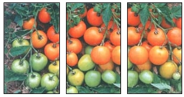
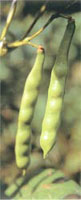

Great taste is one of the biggest reasons to grow your own garden, yet many of the best-tasting varieties are becoming hard to find. That's because our current food system often values shelf life and shipping qualities more than taste and tenderness. MOTHER'S Cream of the Crop series presents outstanding varieties recommended by our green-thumbed readers.
An old French variety, 'Jaune Flamme' is a fabulous fresh-eating tomato with an explosive, intense flavor that shines through any salad dressing with ease.
The outer walls are thick and meaty, with just enough juice to provide a full-bodied, citrus-like flavor that surprises all who try it for the first time. The real joy is cutting into one. The yellow-orange skin yields to beautiful red-mottled flesh inside.
Although this heirloom is excellent for fresh salads, it reaches its full potential as a drying tomato. It has such an exquisite flavor that I use it exclusively when baking, especially in breads.
A joy to grow as well as to eat, the plants are indeterminate (bearing fruit continuously) and early producers, and seem resistant to many diseases that normally plague tomatoes. The fruits are held in clusters of six to eight, each fruit the size of a golf ball or slightly larger.
Seed is available from the Seed Savers Exchange catalog and Tomato Growers Supply (listed as 'Flamme').
MELODY ROSE
Benton, Kentucky
Tobacco Worm' is the standard by which I judge all other snap beans. A pole variety, it has pods that grow thick as your finger and 6 or more inches long, yet never turn woody or fibrous. Even when filled out with their average of six seeds, they remain tender-crisp as long as they are green. 'Tobacco Worm' has a rich, deep flavor without the high sugar content that makes many other snap beans seem overly sweet to me. Like most old-time varieties, 'Tobacco Worm' has zipper strings that are easily removed when you snap off the tips before cooking.
'Tobacco Worm' beans hail from eastern Kentucky, where they were thought to resemble the notorious tobacco worm. They have been in some families for as many as six generations, but it took me three years of searching to finally find seed. My line comes from Virginia Jones of Waco, Kentucky, whose family has grown the beans since the 1960s. Their seed came from the Farris Rose family of Estill County, Kentucky. Mr. Rose, who died at age 91 in 1988, had inherited them from his parents, who presumably inherited them from their parents.
There are no commercial sources of 'Tobacco Worm' bean seed. However, by special arrangement, MOTHER EARTH Nevis readers can order packets of 100 seeds for $5, postpaid, from Bill Best; Sustainable Mountain Agriculture Center; 1033 Pilot Knob Cemetery Road; Berea, KY 40403.
BROOK ELLIOTT
Richmond, Kentucky
At first bite, the sugars of this sweet, silky-smooth pea spring to the surface, but balanced with just a hint of starch, they also are savory enough to dress up a salad or to eat fresh.
'Laxton Progress No. 9' is named in honor of Thomas Laxton, a famous 19th century plant breeder. The 18-inch-tall, very productive plants produce 4 1/2-inch pods that mature in 75 days. Seed is available from Victory. Willhite, Shumway and William Dam companies.
DAVID GEIER
El Cajon, California
Unlike some other beet varieties, 'Lutz Greenleaf' is deliciously sweet but not overwhelming. The mild taste of these tender giants temps one to eat slice after slice. Just cook them and eat them warm, with nothing else added. The tops also are edible, simply steamed like Swiss chard or added to a green salad.
The reddish-purple, top-shaped roots are one of the best beets for winter storage. Sown in the spring for fall harvest, they also overwinter well when mulched heavily.
Said to have originated in Germany, 'Lutz Greenleaf' is an Amish and Mennonite heirloom, common in Pennsylvania Dutch country. 'Winterkeeper' and 'Lutz Greenleaf' are the same variety, and 'Longseason' may also be synonymous with them.
Seed is available from Nichols, Territorial, Abundant Life and William Dam seed companies.
JEPTHA YODER
Milroy, Pennsylvania
For seed company addresses, see " Gardeners Almanac " on Pages 90 and 91.
To nominate your favorite great-tasting variety, contact Brook Elliott at Box 519; Richmond, KY 40476; or BrookBarb@aol.com for details.
|
 Jaune Flamme' tomatoes |
 'Tobacco Worm' snap beans |
|